APSI Capture — User's Manual
The photographer's app from Action Plus Sports Images: the card, the choice, the caption, the correction and the wire, in one window.
Start here
APSI Capture is the photographer's Mac app from Action Plus Sports Images. It takes the frames off the camera, lets you choose, caption and correct them, and sends the finished JPEGs to the agency — one app in place of Photo Mechanic, Lightroom and an FTP client.
It works on the raw files (Canon CR3 and others) and never changes them. Everything you do is written beside each frame in a small sidecar file, and the JPEG that leaves is rendered from the raw with your crop, your corrections and the caption inside it.
The five steps
Every shoot goes through the same steps, and each has a key — the first letter of the step.
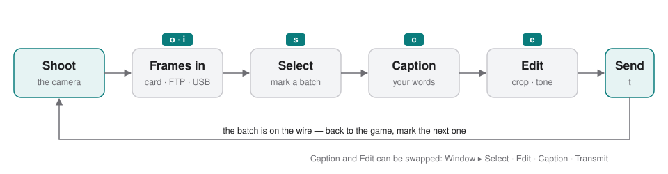
| Step | Key | What happens there |
|---|---|---|
| Frames in | o i | Open a card or folder, ingest a card onto the Mac, or let the camera send frames over FTP or USB |
| Select | s | The contact sheet and the big view. Mark a batch, rate, tag, filter |
| Caption | c | Say what is happening. The agency's wording is built around your words |
| Edit | e | Crop, straighten, tone and colour, on the raw |
| Transmit | t | Send the finished frames to the destination, or save them locally |
Caption and Edit can be swapped if you prefer to correct before you write: Window ▸ Select · Edit · Caption · Transmit. The dots that track each frame swap with them.
Batches
The thing to understand about APSI Capture is that it is built around batches, because that is how a match is worked: you shoot for a while, pick out the eight frames that matter, get them on the wire, and go back to shooting. A batch is a colour. Press 1 on a frame and it is in the red batch; click the red swatch in the toolbar and the whole window — the sheet, the caption screen, the edit screen and Transmit — shows only that batch, so you can take it from the card to the agency in a couple of minutes without the rest of the card in the way. The second batch is yellow, the third green, and so on up to eight. A match, start to finish walks through one.
Ready
A frame is ready when it has been both captioned and edited. Transmit sends the ready frames and says what is missing from the others — no caption, caption not confirmed, not edited. Nothing stops you sending an unfinished frame when the whistle is close; the list just tells you what you are sending.
Where your work is kept
Beside each frame, in a .XMP sidecar: the batch colour, rating, tag, the caption, and the correction. The raw file is never written to. The sidecars are the ones Photo Mechanic writes, so a card marked up in Photo Mechanic opens here with its colour classes intact, and the other way round.
Installing and updating
Install once from the DMG; after that the app updates itself.
Install
- Open the
APSI-Capture-….dmgyou were sent and drag APSI Capture onto the Applications folder beside it. The app will not run from the disk image itself; it points you back to that window. Eject the disk image afterwards. - Launch it from Applications, the Dock or Spotlight (
⌘ space, type APSI). It is signed and notarised, so macOS opens it without a warning. Updates install themselves only from Applications. - The first time the app receives frames from a camera, macOS asks for Local Network permission. Allow it.
The build you are running is under APSI Capture ▸ About APSI Capture — for example 0.1.314. Quote it when you report a problem.
The first launch
The first time it runs, APSI Capture says what it is — beta software, not for a paid shoot, no liability — and asks for your name and email. Type them and click I understand, or Quit if you would rather not. The name and email go to the desk with the build you are on, every time the app launches, so that a problem can be traced to a copy and the desk can see who is on which build. The notice comes back, without the fields, the first time you open the app each day.
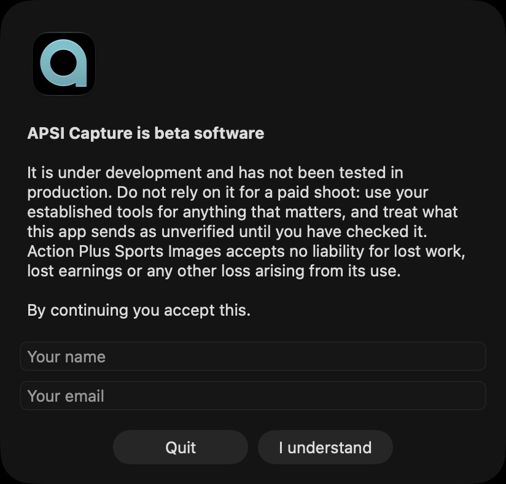
Updates
The app checks for a newer build every hour while it is running and offers it with its release notes and an Install Update button. Click it: the new build downloads, replaces the app in Applications and relaunches. To check at any moment, choose APSI Capture ▸ Check for Updates…. You never need a new DMG after the first install.
A build more than one behind the newest is withdrawn: the app says so, offers Check for Updates…, and will not run until it has updated.
Requirements
macOS 15 or later, on Apple silicon.
This manual
Help ▸ APSI Capture Manual (⌘?) opens this manual from inside the app, including with no signal at a ground. The latest copy is also at bkupbens.github.io/apsi-capture-releases, with the newest build.
The window
One window, four screens. The toolbar, the tabs and the status bar stay the same on all of them, so once you know the contact sheet you know where everything is.
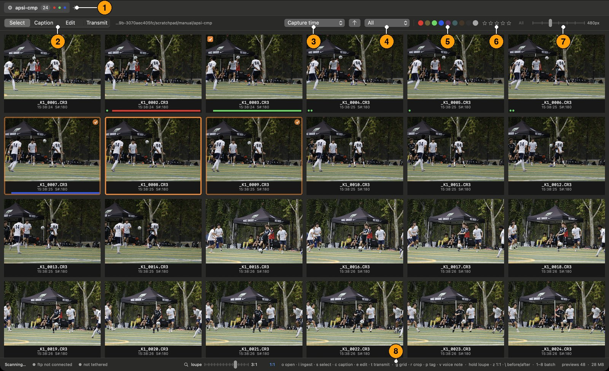
- Tabs — one per card or folder, with the number of frames and a dot for each batch marked in it. + opens another; ⌘W closes one.
- The four steps — Select, Caption, Edit, Transmit. Click, or press s c e t.
- Sort — by capture time, filename, when the file was last modified, batch colour, rating, or a field of your choosing; the arrow flips the order.
- All · Selected · Tagged · Untagged — narrows the window to the frames picked out, or to the tagged ones.
- Batch swatches — click a colour to work inside that batch; click it again for everything. The hatched circle is the frames with no colour.
- Stars — that rating or better.
- Thumbnail size.
- The status bar — what the app is doing (Scanning…), the ftp and tethered lights, the loupe factor, and every key with what it does.
What a frame shows
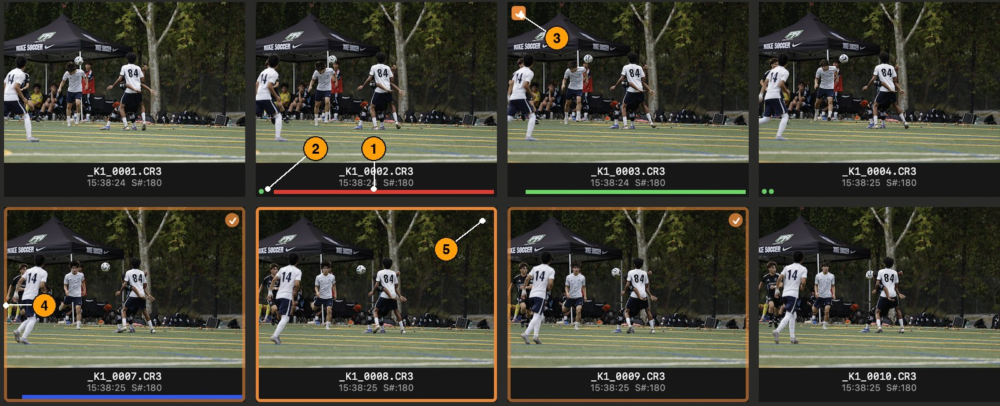
- The batch colour, as a bar along the bottom.
- Two dots — caption and edit, in the order your steps are in. Green is done, orange is started, none is untouched. Both green means ready.
- A tick top-left: tagged.
- An orange ring: the frame in hand. Frames picked with it have a dimmer ring and a tick top-right.
- A microphone bottom-left: the camera recorded a voice note. Click it, or press v, to hear it.
The same marks appear by the frame's name on the big view and the edit screen, beside the Confirm buttons on the caption screen, and in the Transmit list — a frame reads the same wherever you meet it.
A match, start to finish
One batch, from the card to the agency. This is the rhythm the app is built for; the rest of the manual is the detail.
You have been shooting for twenty minutes. There is a goal on the card and the desk wants it.
Get the frames in
Put the card in the reader and press o, then choose the card's DCIM folder. It opens as a tab; the count in the tab rises as the frames are read, and the sheet fills. Or, if the camera is sending over FTP or USB, the frames are already arriving in the open tab — see Getting frames in.
Mark the batch
Scroll to the goal. Click the first frame you want, then press 1: a red bar appears under it, and a red dot appears on the tab. Arrow to the next and press 1 again. For a run, click the first, ⇧-click the last, and press 1 once — every picked frame takes the colour.
Work inside the batch
Click the red swatch in the toolbar. The sheet now shows only the red frames, and so will every other screen until you click the swatch again (figure 5). The rest of the card is still there; it is just out of the way.
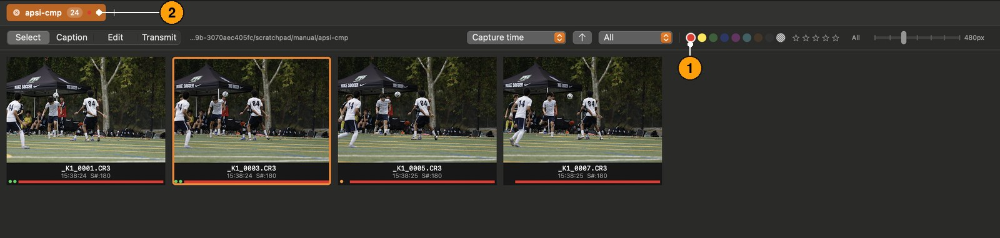
Caption them
Press c. The first red frame is up with the caption screen beside it. Type what is happening — scores the opening goal — and watch Rendered caption build the agency's sentence around it: date, place, your words, venue, credit. Spelling is checked as you type — a red underline, suggestions on a right-click — and nothing is corrected for you, so a player's name is never changed behind your back. Press ⌘⏎ (Confirm & Next): the caption dot goes green and the next red frame is up. The counter by the name reads 2 / 8 red — where you are in the batch. When a frame is the same moment with a different shirt, ⌃⌘C copies the words and ⌃⌘V pastes them.
Correct them
Press e. Press ⌘U for Auto Tone, pull a slider if it needs it, press r and drag a crop. The edit dot goes green the moment you change anything. For the run, ⌥⌘C copies the settings from this frame; select the rest in the filmstrip and ⌥⌘V pastes them, or ⇧⌘S syncs them to everything picked.
Send them
Press t. The list says Ready — the frames with both dots green — and Not finished, with why. Choose the destination and type the match in Subfolder, and click Send above the list. Each frame shows its progress and then a tick; a frame the server refused shows the server's own words in red.
Back to the game
Click the red swatch again to see the whole card. The next batch is 2, yellow.
Getting frames in
Frames reach the app three ways: you open a card or folder, you ingest a card onto the Mac, or the camera sends them itself.
Open a card or folder
- Press o, or choose File ▸ Open… (⌘O).
- Pick the folder that holds the frames — a card's DCIM folder, or any folder on the Mac.
It opens as a tab named after the folder. The count in the tab rises as the frames are read, and the colours and ratings already on them appear a moment later. Frames that land in that folder while it is open — from a card still being written, from the camera, from the desk — join the sheet by themselves.
File ▸ Open Recent lists the last folders; ⌘W closes a tab. Several can be open at once.
Ingest a card
Ingest copies the card to a folder on the Mac and opens the copy — what you want before the card goes back in the camera.
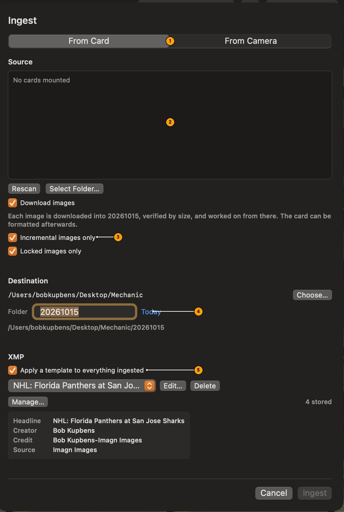
- From Card copies a card in the reader. From Camera reads the card in a body on a USB-C cable.
- Source — the cards mounted. Rescan looks again; Select Folder… picks any folder.
- Download images copies the frames (each one verified by size, so the card can be formatted afterwards). Incremental images only skips frames already ingested from this card — for a card you top up during the day. Locked images only takes just the frames you protected on the camera: cull in-camera, ingest the keepers.
- Destination — the folder the copy goes into, named for the day (Today) or whatever you type.
- Apply a template to everything ingested — the XMP template (headline, credit, source…) goes onto every frame as it lands, so nothing sits there with only a filename. Edit… changes it; Manage… opens the library.
Press i or choose File ▸ Ingest… (⇧⌘I), set the sheet, and click Ingest. The progress line shows moved of total; the tab is usable while it copies.
From the camera over FTP
Bodies with Ethernet or Wi‑Fi (Canon R1, R3, R5 and others) can send each frame to an FTP server as it is shot. The app is the server: it listens on the local network, and frames land straight in the open tab.
- Choose File ▸ Start Listening. The status bar's ftp light comes on and the File menu reads Listening (FTP).
- On the camera, set the FTP destination:
| Setting | Value |
|---|---|
| Server | this Mac's address on the local network — shown beside the ftp light in the status bar while listening |
| Port | 2121 |
| User | apsi |
| Password | capture |
| Mode | passive |
The first time, macOS asks for Local Network permission; allow it. Nothing else on the Mac is affected — the app only accepts connections and never opens the Mac to the internet. A frame reaches the sheet the moment it has finished arriving. File ▸ Stop Listening stops.
Tethered over USB
Plug the body in. The status bar's tethered light comes on and the File menu reads Listening (USB-C); each frame transfers as it is shot. Locked images only and Incremental apply here too, so a protected frame is the gesture that chooses one in the field.
Select
Select is where you decide what you are sending. Two views, and everything on the keyboard.
The contact sheet
g from anywhere. Every frame as a thumbnail with its name, time and marks (figure 3). The slider at the top right sets the size; the sheet handles cards of ten thousand frames without slowing down, so scroll freely.
| To | Do |
|---|---|
| Pick a frame | Click it, or arrow to it (↑ ↓ move by row) |
| Pick a run | Click the first, ⇧-click the last — or ⇧-arrow from the frame in hand |
| Add or remove one | ⌘-click |
| Pick everything shown | ⌘A; ⇧⌘A picks none |
A mark applies to every picked frame at once, so pick a run and press the key.
The big view
s, space, return, or double-click a thumbnail: one frame filling the window, sharp enough to judge focus. Arrow keys move through the frames and the sheet follows. esc or g goes back.
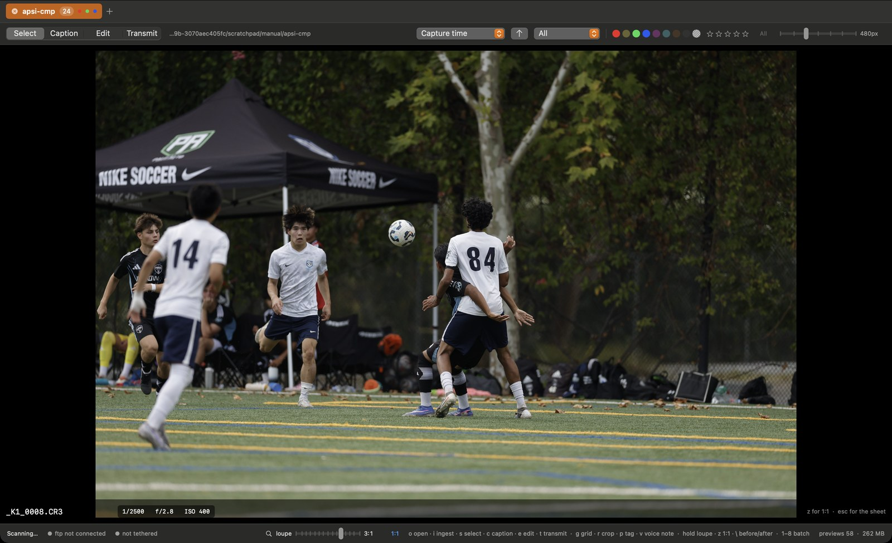
Looking closer. Hold the mouse button down anywhere on the picture for the loupe — that spot at the factor on the loupe slider in the status bar, which ⌘+, ⌘− and ⌘0 change. Let go and it comes back. Press z to zoom the whole frame at that same factor, drag to pan, z or esc to leave. ⌘0 sets the factor to 1:1, one screen pixel per sensor pixel, if that is what you want to judge by.
Before and after. \ shows the frame as it came off the camera; press it again for your version.
Marking frames
Three kinds of mark. All are in the Metadata menu and on the right-click menu of any thumbnail, and all travel with the frame in its sidecar.
| Mark | Keys | Shows as |
|---|---|---|
| Batch colour | 1 to 8; 0 clears | a bar along the bottom of the thumbnail |
| Rating | ⌥1 to ⌥5; ⌥0 clears | stars, in the Transmit list and the filters |
| Tag | p (or ⌘T) toggles | a tick top-left |
The eight colours, in key order: red, yellow, green, blue, magenta, cyan, brown, grey — the same eight as Photo Mechanic.
Filtering and sorting
The toolbar narrows the window; what it shows is what every screen then works on, Transmit included.
- Batch swatches — click a colour to see only that batch; click another to add it; ⌥-click for only that one; click again to clear. The hatched circle is the frames with no colour.
- Stars — that rating or better.
- All · Selected · Tagged · Untagged — the frames picked out, or the tagged ones.
- Sort — capture time, filename, when the file was last modified, batch colour, rating, or a field from the file (ISO, file size…); the arrow flips the order.
Voice notes
A frame with a sound memo recorded on the camera shows a microphone badge. Click it, or press v on the frame, to hear it; press again to stop.
Batches
A batch is a colour, and the colour is how a few frames are taken through the whole workflow together, ahead of the rest of the card.
Mark a batch
Pick the frames and press a number: 1 for red, 2 for yellow, up to 8. The bar under each thumbnail shows the colour, the tab shows a dot for every batch that exists, and the status bar counts them — red 8 · yellow 3.
Work inside it
Click the batch's swatch in the toolbar (figure 5). The window now holds only that batch:
- the contact sheet and the big view show those frames, and the arrow keys move within them;
- the caption screen's Confirm & Next and Next → move to the next frame in the batch, and the counter by the name says where you are — 3 / 8 red;
- the edit screen's filmstrip is the batch, so Sync Settings to Selection reaches exactly those frames;
- Transmit's Ready and Not finished are the batch, and Send sends it.
Click the swatch again for the whole card.
Send it, and start the next
When the batch is on the wire, click the swatch off, go back to shooting, and mark the next batch with the next number. Two batches can be shown together — click both swatches — and ⌥-click a swatch shows only that one.
Change or clear a batch
Press another number to move a frame to a different batch; 0 clears it. Sort by Batch colour to see the batches side by side.
Caption
You type what is happening; the app writes the caption the agency wants around it.
c opens the screen on the frame in hand, with the big view beside it (figure 8).
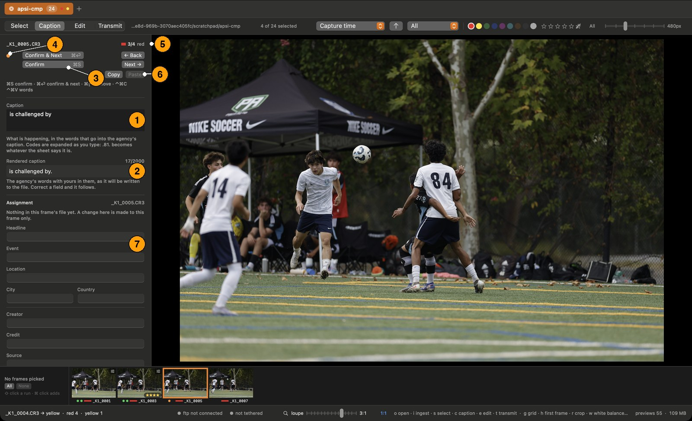
- Caption — the words that are yours: scores the opening goal, celebrates with. Codes are expanded as you type.
- Rendered caption — the sentence exactly as it will be written into the file: date, city, your words, venue, credit. Correct a field below and it follows. The counter is the agency's limit.
- Confirm & Next (⌘⏎) marks this caption done and moves on — the key you press most. Confirm (⌘S) marks it done and stays. Once a caption is confirmed the button reads Next →, and ⌘⏎ simply moves on.
- The two dots — where the frame stands. Orange on the caption dot means words typed but not confirmed.
- Where you are in the batch — 3 / 4 red.
- Copy and Paste (⌃⌘C, ⌃⌘V) carry the words from one frame to the next.
- Assignment — set once per tab and inherited by every frame in it.
Along the bottom is the same filmstrip as on Edit: the frames in the window (the batch, if one is on), the one you are on outlined. Click a frame to caption it; ⇧-click a run or ⌘-click to pick several, for Apply XMP to Selected…. It has no Paste settings button — that is Edit's.
← Back and Next → (⌘[, ⌘]) move without confirming. Nothing is lost by moving on: the words are saved as you type them. What the app needs to know is when a caption is finished, which is what confirming says — and it is what Transmit reports as caption not confirmed until you do.
Codes
Type a code between full stops — .81. — and it becomes the player: Oscar Piastri (81) of Australia and McLaren. The lists come from code sheets — a squad list, an entry list, one you keep yourself — loaded under Metadata ▸ Code Replacement… (see Setting up). A code that no sheet knows is left as typed.
The assignment
Headline, event, location, city and country, creator, credit, source, copyright and usage terms. Set once for the game — by the XMP template at ingest, or typed here — and every frame in the tab inherits it. Two commands push a template over frames already here:
- Metadata ▸ Apply XMP to All Frames… (⇧⌘T) — for the frames that came in before the headline was right.
- Metadata ▸ Apply XMP to Selected… (⌥⌘T) — a different template on a handful: the photographer shooting for two agencies sends one frame of a sequence to each, with its own credit and source. With nothing picked it reads Apply XMP to Current Frame… and reaches the frame on screen — on the Caption and Edit screens, and in the big view. With a filter on, only frames shown are reached.
- File ▸ Move to Trash… (⌘⌫, or ⌫ when no box is being typed in) — the picked frames, or the frame on screen, on any screen: the raw, its XMP and its voice note go to the macOS Trash after you say so, and can be put back from there.
- File ▸ Copy Originals to… — the raws, XMP sidecars and voice notes of the picked frames (or the frame on screen), copied byte for byte into a folder you choose. The XMP carries your captions, fields, marks and edits, so the copy is the whole frame. A file already there of a different size is replaced only if you say so.
Field limits are shown as they are approached; the agency's systems truncate silently, so the counter is worth a glance.
Working through a run
A run from the same passage of play is the same sentence with a different number on the shirt. Confirm the first, Copy, ⌘⏎ to the next, Paste, ⌘⏎ — four keys a frame. Metadata ▸ Mark Captioned (⌘K) confirms the frame in hand from any screen.
Voice notes
If the camera recorded a sound memo, the microphone button plays it (v), so you can caption from what you said at the time.
Edit
Crop, straighten, tone and colour — on the raw, as numbers beside the frame. The JPEG that leaves is rendered from those numbers, so what you judge here is what the agency gets.
e opens the frame in hand on the edit screen (figure 9).
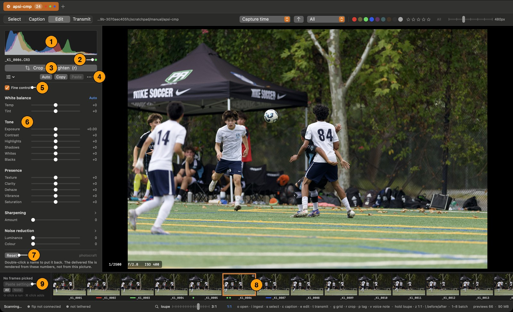
- Histogram of the frame as corrected.
- The frame's name and its two dots. The edit dot goes green the moment anything changes.
- Crop & straighten (r) — see below.
- Presets, Auto, Copy, Paste — the presets menu applies a saved set of sliders or saves the current one under a name; Auto Tone sets the tone and leaves white balance alone; Copy and Paste carry the sliders from frame to frame.
- Fine control halves every slider's range — ±50, exposure ±2.5 stops — so the same travel of the hand is a smaller change. The numbers mean the same; only the reach changes. Auto respects it.
- The sliders, in groups. Double-click a name to put that slider back. Reset, at the foot of the panel, puts the whole frame back; ⌘Z takes back the last change.
- The white balance picker (w) — click it, then click something in the picture that should be grey.
- Capture only — Haze, Smooth and Background, which Lightroom has no setting for (below).
- The filmstrip — the frames in the window (the batch, if one is on). Arrow keys move; click a run or ⌘-click to add.
- Paste settings onto every frame picked in the filmstrip; All and None pick them.
The sliders
| Group | Controls |
|---|---|
| White balance | Temp, Tint — Auto (⇧⌘U), and the picker (w) |
| Tone | Exposure, Contrast, Highlights, Shadows, Whites, Blacks — and Auto (⌘U) |
| Presence | Texture, Clarity, Dehaze, Vibrance, Saturation |
| Sharpening | Amount; open the group for Radius, Detail, Masking |
| Noise reduction | Luminance, Colour; open the group for their Detail controls |
| Capture only | Haze, Smooth, Background |
All but the last group are Lightroom's controls, with Lightroom's names, ranges and defaults.
Capture only are Capture's own, for what Lightroom's sliders do not quite reach:
- Haze (0–100) takes out the haze itself — the grey veil of a long lens across a big stadium — rather than adding contrast as Dehaze does.
- Smooth (0–100) smooths noise and fine grit, reading how noisy the frame actually is, so the same number suits ISO 400 and ISO 12800.
- Background (−100 to +100) darkens or lightens everything but the subject. The Mac finds the subject itself, on the Mac, with macOS's own subject detection; nothing leaves the computer.
They travel with the frame and into everything Capture sends, but not to Lightroom: Lightroom has nothing to put them in, so a frame opened there shows the rest of the edit without them.
Auto
⌘U (Auto Tone) sets exposure, contrast, highlights, shadows, whites, blacks and vibrance from the picture, and never touches white balance; ⇧⌘U, or Auto beside White balance, sets the white balance on its own. It is a starting point: look, and pull back what it overdid.
The two dots in the top corners of the histogram light when the picture clips at that end. Click one — or press J for both — and the clipping shows on the picture: blown highlights in red, crushed shadows in blue. It stays on from frame to frame until clicked off.
Hold ⌥ while dragging Whites or Blacks to see only what is clipped, as Lightroom shows it: on black, the points pushed to pure white (a colour where one channel is clipped, white where all three are); on white, the points pushed to pure black. Let go and the picture is back.
The white balance picker
Press w, or click the target beside Auto under White balance, and the pointer becomes a crosshair. Click something in the picture that should be grey — a white shirt in shade, concrete, a referee's sock — and Temp and Tint are set so it is. The picker then puts itself away; w again or Esc puts it away without clicking. It reads the picture as it arrived, not as edited, so clicking the same spot twice gives the same answer. A blown or black spot says nothing about the light, and the picker says so rather than guessing.
Crop and straighten
Press r on any screen. The frame opens on the edit screen with the crop box over it (figure 10).
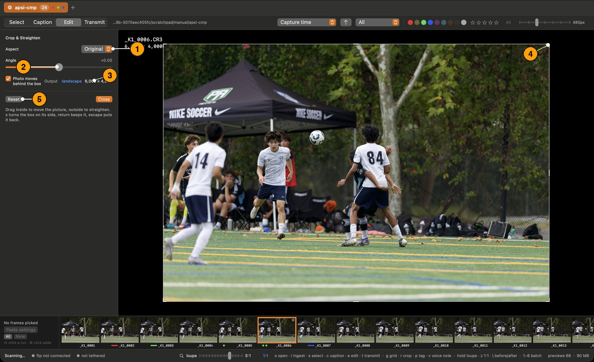
- Aspect — free, the original, square, 3:2 or 4:3.
- Angle — or drag outside the box to straighten. A side grabbed anywhere along its length moves that side; a corner moves two.
- Output — the pixel size of the result, on screen the whole time.
- The handles resize the box.
- Reset puts the crop back; Close keeps it.
Photo moves behind the box is Lightroom's interaction, and the default: drag inside to move the picture, outside to straighten. x turns the box on its side; return keeps the crop, esc puts it back. Nothing is dimmed — what is being cut away stays at full brightness, which is how you decide whether to cut it. A thirds grid shows while framing and a fine grid while straightening, since finding level is the hard part. Straightening shrinks the box to keep it inside the photograph.
Before and after
\ shows the frame as it came off the camera; press it again for your version.
Working across a run
Correct one frame, then push the settings out:
- Copy Settings (⌥⌘C) and Paste Settings (⌥⌘V) — one frame to another.
- Sync Settings to Selection (⇧⌘S) — the frame in hand to every frame picked with it. Pick the run in the filmstrip (click, ⇧-click, or All); the frame you corrected stays the primary.
The working method the filmstrip is built for: start from a preset, fine-tune one frame, paste those settings onto the others, then tweak each one.
Transmit
Which frames are finished, what is missing from the ones that are not, where they go, and the button that sends them.
t opens the screen (figure 11). The frames shown are the frames in the window — if a batch is on, the batch.
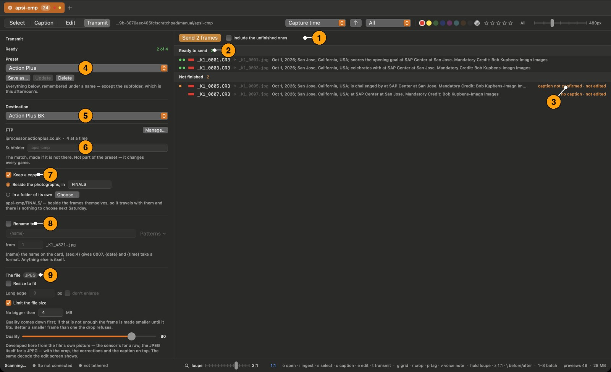
- Send, above the list, with Include the unfinished ones beside it. The button says what will go — Send 2 frames — and reads Save when the destination is Save locally. To send only the tagged frames, choose Tagged in the toolbar; the list and the button narrow together. While it sends, the bar shows the progress and Stop; afterwards, what went and what failed.
- Ready to send — every frame with both dots green: the dots, the colour bar, the outgoing filename and the rendered caption. The list scrolls under the bar.
- Not finished, with the reason: no caption, caption not confirmed, not edited.
- Preset — everything in the panel below, remembered under a name. Save as…, Update, Delete. Ready, above it, counts how many of the frames shown will go.
- Destination — Save locally renders the JPEGs and sends nothing, or one of your FTP destinations; Manage… opens the list.
- Subfolder — the match, made on the server if it is not there. Typed each game, and deliberately not part of the preset.
- Keep a copy — a JPEG kept on this Mac as well: beside the photographs in a subfolder you name, so it travels with the frames, or in a folder of its own.
- Rename to — a pattern for the outgoing name. Patterns lists the usual ones;
{name}is the name on the card,{seq:4}numbers from the start you set (0007),{date}and{time}take a format, anything else is itself. The line beneath shows what the first frame will be called. - The file — always a JPEG, rendered from the raw. Resize to fit sets the long edge in pixels (don't enlarge for frames already smaller). Limit the file size sets a ceiling in MB: quality comes down first, and if that is not enough the frame is made smaller until it fits — better a smaller frame than one the drop refuses. Quality is the JPEG quality.
Send sends the ready frames; Include the unfinished ones sends everything shown — a photographer with four minutes to the whistle sends what is on the card, and the list says what it is sending. A sent frame shows a tick; a frame the server refused shows the server's own words in red, so a frame that did not go is never silent.
Every JPEG leaves with the caption and the assignment written into the file itself — IPTC and XMP — along with the camera and lens. Nothing is written beside the raw: the JPEG is made in memory, goes up the wire and is let go, which is why sending the same frame again gives the same picture.
Setting up
Done once, or once a season: where frames are sent, what goes onto them at ingest, and the code sheets.
FTP destinations
File ▸ FTP Destinations…, or Manage… on the Transmit screen. Each destination is a host, a login and a folder kept under a name — Imagn, Action Plus, the club — so the choice at the moment of sending is the name, not seven fields.
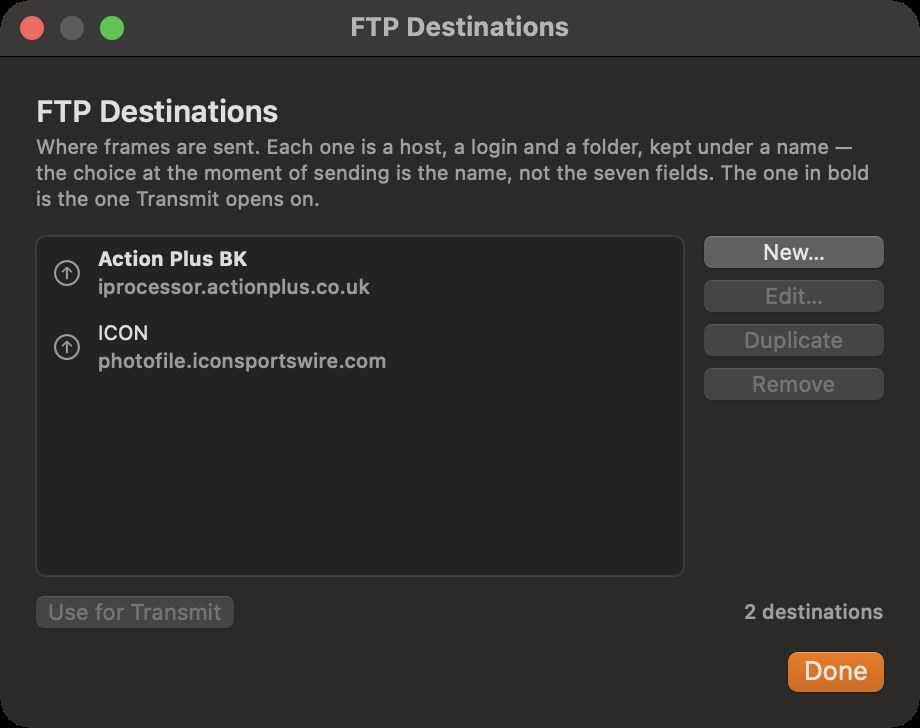
| Field | Meaning |
|---|---|
| Name | What the Transmit screen shows |
| Host, port | The server; port 21 unless told otherwise |
| User, password | The login. The password goes into the Mac's keychain, not into any file |
| Path | The folder on the server; the subfolder is made under it |
| Passive mode | On for almost every server |
| FTP with TLS | Encrypted, where the server supports it |
| Retries, timeout | How many times a frame is tried again, and how long to wait for the server |
| Connections | How many frames go up at once. Agencies differ: several refuse a fifth login |
New…, Edit…, Duplicate and Remove manage the list; Use for Transmit makes one the default. The login is kept open between frames, which on a stadium connection is the difference between a minute and five.
XMP templates
Metadata ▸ XMP Templates…. A template is the assignment — headline, event, location, creator, credit, source, copyright, usage terms — kept as a file, so that when an agency rewrites its rights wording the template follows without being rebuilt by hand.
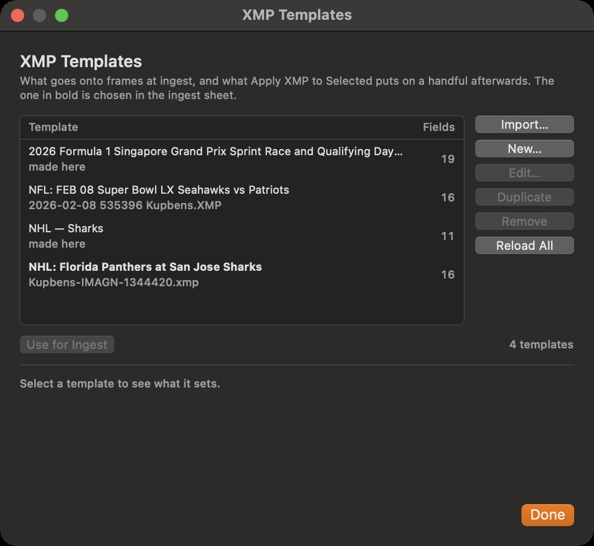
- Import… reads a Photo Mechanic .XMP template as it is.
- New… and Edit… open the editor; Reload All re-reads the files.
- Use for Ingest makes one the ingest sheet's choice.
A template without a caption of its own leaves the caption to be built as a sentence around your words.
Code replacement
Metadata ▸ Code Replacement…. The sheets that turn .81. into a name.
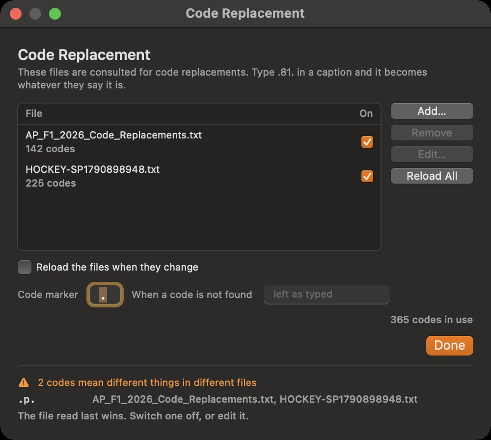
- Add… a file. Photo Mechanic's tab-separated sheets, an entry list with arrows, and files with equals signs are all read; headings and blank lines are ignored. Several can be on at once.
- Reload the files when they change — for a sheet somebody else keeps.
- Code marker — the character on each side of a code; a full stop by default.
- When a code is not found — left as typed, or whatever you put here.
- When two sheets disagree about a code, the window says so: the file read last wins, so switch one off or edit it.
The window
- Window ▸ Panels on the Left puts the caption and edit panels on the left, for a second screen that sits that way.
- Window ▸ Select · Caption · Edit · Transmit and Select · Edit · Caption · Transmit set the order of the steps. The two dots follow the order.
Reference
The marks
| Mark | Where | Meaning |
|---|---|---|
| Two dots — caption, then edit (they swap if Edit comes before Caption in your order) | under the thumbnail; by the name on the big view and the edit screen; by the Confirm buttons; in the Transmit list | green done, orange started, none untouched. Caption: orange is words typed but not confirmed. Edit: green is a correction made. Both green is ready |
| Colour bar | along the bottom of the thumbnail; a swatch by the name on the caption and edit screens | the batch: red, yellow, green, blue, magenta, cyan, brown, grey |
| Tick, top-left of the picture | thumbnail | tagged (p) |
| Orange ring | thumbnail | the frame in hand; a dimmer ring with a tick top-right is picked with it |
| Microphone, bottom-left | thumbnail, big view, caption screen | a voice note; click or v to play, a square while it plays |
| n / m red | caption and edit screens | where the frame sits in its batch |
| Tick in the Transmit list | Transmit | sent |
| Red text in the Transmit list | Transmit | the server refused it, in its own words |
The status bar
Left to right: what the app is doing (Scanning…, or the frame in hand and the batch counts), the ftp and tethered lights, how many frames are ready, the loupe slider and factor, and every key with what it does. Press a key while a text field has the keyboard and the field gets it: click a photograph to take the keys back.
Keyboard shortcuts
Single letters work whenever a text field does not have the keyboard.
Screens and views
| Key | Does |
|---|---|
| o ⌘O | Open a card or folder |
| i ⇧⌘I | Ingest… |
| s c e t | Select (the big view), Caption, Edit, Transmit — d (Lightroom's Develop) is Edit too |
| h ⌥⌘↑ | First frame (home) — every step opens on the frame you are on, so this is the way back to the start. ⌥⌘↑ works in a text box too |
| g | The contact sheet |
| space return | Open or close the big view |
| double-click | The big view on that frame |
| z | Zoom at the loupe factor, on and off |
| hold the mouse | The loupe |
| ⌘+ ⌘− ⌘0 | Loupe closer, wider, 1:1 |
| \ | Before / after |
| esc | Leave the zoom, then the big view; put a crop back |
| ⌘W | Close the tab |
| ⌘? | This manual |
Moving and picking
| Key | Does |
|---|---|
| ← → ↑ ↓ | Move through the frames; rows on the sheet |
| ⇧+arrow, ⇧-click | Grow a run, pick a run |
| ⌘-click | Add or remove one |
| ⌘A ⇧⌘A | Pick everything shown; pick none |
| ⌘[ ⌘] | Previous frame, next frame |
Marks
| Key | Does |
|---|---|
| 1 … 8, 0 | Batch colour; clear it |
| ⌥1 … ⌥5, ⌥0 | Rating; clear it |
| p ⌘T | Tag or untag |
| ⌘K | Mark captioned |
| v | Play the voice note |
Caption
| Key | Does |
|---|---|
| ⌘⏎ | Confirm & Next |
| ⌘S | Confirm |
| ⌃⌘C ⌃⌘V | Copy the caption, paste the caption |
| ⇧⌘T | Apply XMP to All Frames… |
| ⌥⌘T | Apply XMP to Selected… (to Current Frame… when nothing is picked) |
Edit
| Key | Does |
|---|---|
| r ⌘R | Crop and straighten |
| x | Turn the crop on its side |
| w | White balance picker: click something that should be grey; w again or Esc puts it away |
| ⌘U ⇧⌘U | Auto Tone, Auto White Balance |
| ⌥ + drag Whites / Blacks | Show what is clipped |
| J | Clipping warnings on the picture, on and off (Edit) |
| ⌫ or ⌘⌫ | Move to Trash — the picked frames, or the frame on screen, asked first |
| ⌥⌘C ⌥⌘V | Copy settings, paste settings |
| ⌘Z ⇧⌘Z | Undo the last correction, redo it — a preset, Auto, a paste (on every frame it reached), the picker, a crop, a slider's whole drag. In a text box they undo the typing instead |
| ⇧⌘S | Sync settings to selection |
When something looks wrong
| What you see | Why | Do |
|---|---|---|
| A key does nothing | A text field has the keyboard | Click a photograph, then press the key |
| A frame is not in the sheet yet | It is still arriving; a file is left alone until it has stopped growing | Wait a moment. Over FTP the frame appears the instant the camera finishes sending it |
| Nothing shown | A swatch, the stars or the marking filter are excluding everything | Click the ringed swatch off, or set the stars back |
| Transmit says caption not confirmed | Words were typed but ⌘⏎ or ⌘S was never pressed | Open the frame, press ⌘S — or ⌘K from anywhere |
| Transmit says not edited | No correction has been made | Press e, then ⌘U, or Include the unfinished ones |
| A frame shows red text in the Transmit list | The server refused it, and those are its words | Read them: wrong folder, wrong login, a full disk. Fix, then Send again — only the refused frames go |
| No frames arrive from the camera | The Mac is not listening, or is not on the same network, or macOS has not been allowed to use the local network | File ▸ Start Listening; check the status bar's ftp light and the address beside it; allow Local Network in System Settings ▸ Privacy & Security |
| The edit screen looks soft next to the zoom | The edit view is a fitted preview; z and the loupe show the sensor's pixels magnified | Judge sharpness with z or the loupe |
| No update is offered | The app checks once an hour | APSI Capture ▸ Check for Updates… |
| This build of APSI Capture can no longer be used | It is more than one build behind the newest, or has been withdrawn | Click Check for Updates… and install; the app relaunches on the new build |
| You are no longer authorised to use this application | The desk has withdrawn this Mac's access | Delete the app. If you think that is a mistake, talk to the desk |
When you report a problem, quote the build from About APSI Capture, and say which card and which frame.